Vector lines, curves and shapes are easily created using either the Pen Tool or the Pencil Tool. The Pen Tool has several modes that change the way the path is drawn.
 Pen Mode—click-drag on the page to create repeated nodes; repositioning the displayed off-curve control handles at each node defines the shape of the next segment as you lay down nodes.
Smart Mode—click repeatedly on the page to lay down each node; a best fitting curve is created without need for control handle adjustment.
Polygon Mode—click repeatedly on the page to lay down each node; a line is created with sharp nodes made up of straight segments.
Line Mode—click and drag on the page to create a simple single-segment straight line.
To complete the curve without closing it, press the . To close the curve, click on the starting node.
A number of cursor types may appear when using this tool, indicating the outcome of the next click.
Cursor type
Description
Asterisk—creates a new curve
Plus—creates a new node and curve segment
Slope—converts to sharp corner or drag to recreate node
Circle—creates a closed shape
Circled asterisk—creates a new curve from an existing curve’s node.
Circled plus—creates a new node overlapping an existing curve’s node.
To continue an existing curve:
Press the to edit curve or select the curve with the Node Tool.
Place the cursor over the final node on the path that you want to continue.
Click once to select the node.
Release the (or select Pen Tool) and click/drag to place new nodes as needed.
To close curves to create a custom shape:
Do one of the following:
With the curve selected with the Pen or Node Tool, click Close Curve on the context toolbar.
When creating the curve with the Pen Tool, click on the starting node to join it to the final node and create the shape.
To add arrowheads to a stroke:
With a line or curve selected, from the Stroke panel, select an arrowhead style from the Start and/or End pop-up dialogs.
Choose where to position the start and end styles from Place arrow within the line and Place arrow at the end of the line.
With arrowhead styles selected, you can then enter a percentage to the Start and End styles to adjust the size of your selected arrowheads in proportion with the stroke width.
Example arrowheads added to strokes.
About Dot/Dash Line Styles
The Stroke panel allows you to change your stroke into a dotted or dashed line.
A number grid on the panel sets the line's pattern using two number pairs:
The first two values set the size of the initial dot or dash and subsequent space.
The third and fourth values, when set, introduce a more complex pattern by setting a different size for alternate dashes and spaces.
All values are based on the current line width, e.g. a value of 2 is twice the line width.
Dot line style with Round Cap enabled and Dash settings 0,1,0,0 and 0,2,0,0, respectively.
To create a dotted line, use a setting of 0,1,0,0, 0,2,0,0, 0,3,0,0, etc.
Dash line style with Butt Cap enabled and Dash settings 1,2,0,0 and 1,2,4,2, respectively.
The Phase value allows you to 'shift' the dash line style along so the design begins at a different point in the style's sequence. This can have an impact on how dash lines display for closed shapes (see below).
Dash line style 1,2,4,2 with Butt Cap enabled and Phase settings 0 and 4, respectively.

 Draw curves and shapes
Draw curves and shapes